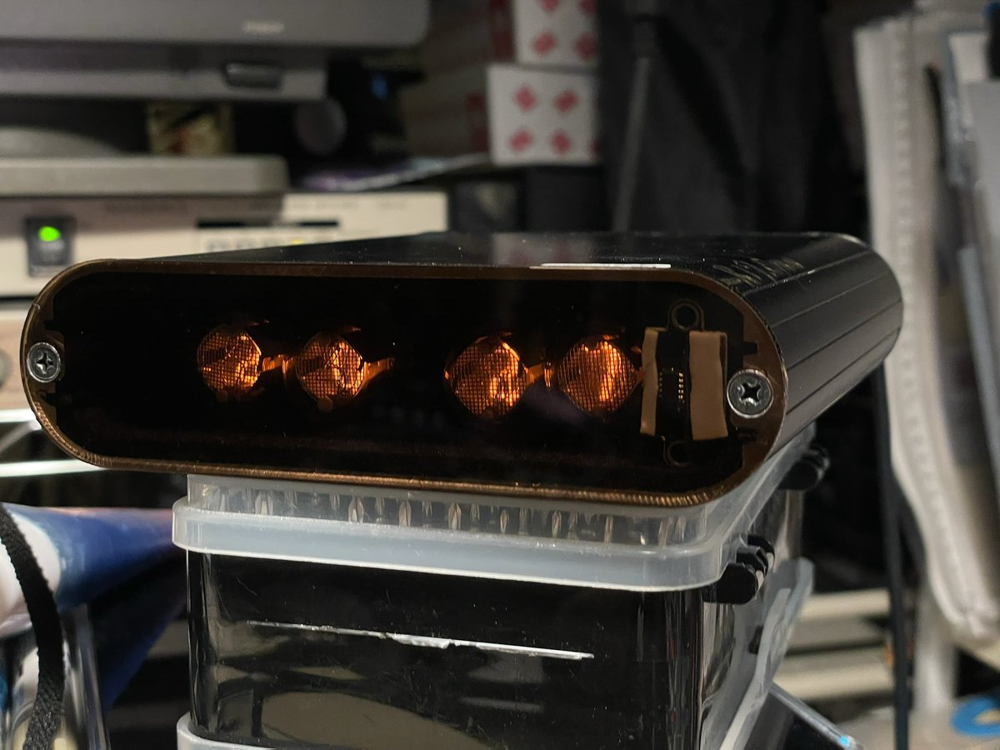

夜桜侵雪～
@Minecraftxfj
@neginegi555 把控制的部分做成底座，整体是立起来的那种感觉会好看一点

鴨川ネギ (⃔ *`꒳´ * )⃕↝🖤
@neginegi555
オーダーメイドしたニキシー管電波時計のフロントパネルが届いたから早速装着!
黒のアクリル両面テープ在庫切れなので、レーザー距離測定センサーはまだ仮止め状態だけど、仕様通りにできた( ｰ̀дｰ́)و
6年越しにやっと自分の思う通りの物が作れた☺️
我ながら上出来👏 https://t.co/qbsg2YiDDv